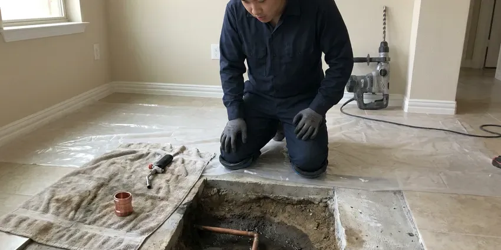

Well Pump Repair in Maple Grove, MN
A well pump problem in Maple Grove, MN stops the whole house. CNV Plumbing treats it as urgent.
- Experienced Well Techs
- Workmanship Warranty
- Repairs That Hold
- Skilled Pump Techs
Well pump repair that restores pressure in Maple Grove, MN.
Call now and we will test the pump, tank and controls as soon as possible.
Well Pump Repair Work in Maple Grove, MN
CNV Plumbing repairs well pumps of every type, and the first job is finding out why the water stopped. It might be a burned pressure switch contact, a bad capacitor or a pump motor that finally gave out after years of service. We test before we guess. Doing it in that order means you pay for the real failure only.
Our expertise includes:
- Well electrical checks
- Pressure switch, control box and capacitor testing and replacement
- Submersible pump and motor pulls and replacement

Additional Plumbing Repair Services in Maple Grove, MN
We offer expert plumbing repair services across Maple Grove, MN to stop leaks, clear blockages, and keep every fixture working the way it should.


Customers
Why Choose CNV Plumbing for Well Pump Repair in Maple Grove, MN?
Sand and power surges wear down well systems faster than age does. A battery backup sump pump and a backwater valve are smart protection for any finished basement. Repairs are built with those failure patterns in mind. That can mean a sand separator ahead of the tank, a surge arrestor at the control box or a pump with a hardened impeller stack.
- Flat Pricing, You get a clear price before work begins, with no hidden fees.
- Local Experience, CNV Plumbing technicians know the well problems that come up most in Maple Grove, MN.
- Proven Brands, Replacement parts are from brands with real warranty support.
Citywide Coverage
Our plumbers cover the outlying parts of Maple Grove where homes rely on private wells. Rural lots, horse properties and hillside homes are all familiar territory.
Experienced Team
Our technicians have worked on wells in homes all over Minnesota, from shallow jet pump setups to deep submersibles. Ongoing training keeps them current on pumps and drives.
Safety-First Approach
Pulling a pump can introduce bacteria, so we disinfect the well afterward. The well cap and seal are restored to keep insects and surface water out.
Trusted Certified Maple Grove Plumbing Services Professionals
At CNV Plumbing, we take pride in licensed, certified plumbing services throughout Maple Grove, MN. Credentials matter in this trade. Every repair, install and maintenance visit follows strict safety and quality rules, and the plumbers doing the work carry recognized industry credentials.
Call Us Now PHCC Plumbing Contractor Recognition
PHCC Plumbing Contractor Recognition Better Business Bureau (BBB) Accreditation
Better Business Bureau (BBB) Accreditation Angi Certified Pro
Angi Certified Pro ISO 9001 Quality Management Certification
ISO 9001 Quality Management CertificationWell Pump Repair Work in Maple Grove, MN
Deep Well Pump Repair in Maple Grove
Deep wells get submersible pumps. They push water up, run quietly and last, but motors, impellers and splices still wear out. After pulling the pump, we test each part and replace only the failed one. Heat-shrink splice kits and a torque arrestor protect the new work in your Maple Grove, MN well.

Well Pump Maintenance & Repair Cost in Maple Grove, MN
Maintenance costs far less than an emergency pull. A typical well pump repair in Maple Grove runs $400 to $1,500, while a yearly checkup costs a fraction of that. CNV Plumbing prices both up front. We check tank precharge, switch contacts, amp draw and the well cap, which catches most problems early.
Pressure Tank Repair in Maple Grove, MN
A waterlogged pressure tank makes the pump short cycle, turning on and off every few seconds. That rapid cycling burns out pumps early. The air charge gets checked and the bladder inspected, then the tank is recharged or replaced so the pump runs a full minute per cycle. Steadier pressure follows.
No-Water Same-Day Repair in Maple Grove
A dead pump leaves the house without toilets, showers or drinking water. CNV Plumbing answers emergency well pump calls throughout Maple Grove and nearby areas and puts them ahead of routine work. Power and the pressure switch get checked first. Those two items fix a surprising share of no-water calls without anyone having to touch the pump hanging down in the well.
Well Pump Repair vs Replacement Cost in Maple Grove, MN
Switch and control repairs often cost $150 to $500, while a pressure tank replacement typically runs $600 to $1,500. Pulling and replacing a submersible pump can range from about $1,800 to $5,000 or more, depending on depth, horsepower and wire size. Replacing an aging pump during a pull saves paying for a second pull later. We lay out both options.
Jet Pump System Repair in Maple Grove, MN
Jet pumps sit above ground and pull water up through a suction line with an ejector. Air leaks on the suction side cause most failures. CNV Plumbing checks the foot valve, the ejector nozzle and every suction fitting, then reprimes the pump and watches it reach cut-out pressure. Nonstop running without pressure usually means lost prime or an air leak.
Submersible Well Pump Repair in Maple Grove
Submersible pumps hang inside the well casing on drop pipe, often 100 feet or more below the wellhead. The usual signs are no water at all, weak pressure or a hum with no flow. Testing starts at the surface. If it has to come up, a pump hoist lifts the pipe safely, and we replace the burned motor, worn impellers or a bad check valve before setting it back.

Control Box and Surge Repair in Maple Grove, MN
Three-wire submersible pumps rely on a control box with a start capacitor and a relay. A battery backup sump pump and a backwater valve are worthwhile protection for any finished basement. Surges from lightning are the usual cause of control box failures. After testing the capacitor, relay and overload, we replace the bad part and suggest a surge arrestor if the box lacks one. Arrestors are cheap.
Local Well Pump Repair Near Me in Maple Grove, MN
Being close to Maple Grove means CNV Plumbing can reach your well the same day. We know the local water systems and the problems that hit pumps in this area.
Dry taps leave no time for searching. CNV Plumbing works throughout Maple Grove and moves no-water calls to the front. Our goal is a phone that gets answered and a truck that shows up the same day for homeowners on private wells.
CNV Plumbing at a Glance
- Licensed and insured plumbers serving Maple Grove, MN
- 24/7 emergency service with same-day scheduling
- Clear written estimates, no hidden fees
- 4.8-star rated by 501+ Minnesota customers
Maple Grove Map
Maple Grove Information
- Population
- 71,288
- Area codes
- 763/952/612
- Service area
- Maple Grove and towns within a 40 mile drive
- Nearby
- Brooklyn Park, Plymouth, Coon Rapids, St. Louis Park
Homes on private wells in Maple Grove, MN have no backup water source, and shifting water levels and soil wear on that pump over time.
Expert Services
Reach out to CNV Plumbing for honest, reliable plumbing from people who know the trade in Maple Grove, MN.
Our Specialized Plumbing Services in Maple Grove, MN
At CNV Plumbing, you get every kind of plumbing service from one company across Maple Grove, MN. From leak detection to full system installs, our team works fast and charges fair prices on homes and commercial properties alike. Take a look at our core services below:


How a Well Pump Repair Visit Works in Maple Grove, MN
CNV Plumbing follows the same sequence on every well call, from the first test to the last.
Request a Quote
Call CNV Plumbing at (612) 712-9569 to tell us what the well is doing. A visit gets scheduled right away.
Diagnosis and Estimate
A technician arrives on time, tests the whole system and finds the problem. The price comes before the repair.
Repair
Once you approve, we repair it with quality parts. We test the system before leaving.
Frequently Asked Questions About Well Pump Repair in Maple Grove
Costs in Maple Grove run from about $400 for a minor electrical fix to $2,500 or more for a new submersible motor. Pump type and well depth matter most. You get the price after diagnosis, before any work starts, and it does not change once you approve it.
A waterlogged pressure tank is the most common cause. Other causes include a dirty filter, a bad switch, a drop pipe leak or a lower water level. We test each one.
Standard repairs usually do not need a permit in Maple Grove, MN. A permit may apply to major replacements or new installs.
Watch for sputtering faucets, pressure that rises and falls, air in the lines or a jump in the electric bill. Rapid clicking at the switch is another warning.
Submersible pumps commonly last 8 to 15 years, depending on run time, sand and water quality. A failing pressure tank that causes short cycling can shorten it badly.
Like-for-like pump replacement usually does not require a permit, but deepening or modifying the well falls under state well rules. Permits are handled by the city or by the state in areas without local inspection, so the paperwork varies slightly by location. You will know if paperwork is required.
Four to eight hours once parts are on site. Very deep wells or stuck pumps can take longer.
Simple fixes like a pressure switch take a few hours at most. Replacing a submersible pump can take a full day, especially in a deep well.
Hear From Customers Who Hired Our Plumbing Experts

Lisa C.
Water was pouring out from under the washing machine on a holiday weekend. CNV Plumbing talked me through closing the valves over the phone and had a plumber at the house within ninety minutes. It was a burst fill hose.
Emergency Plumbing · Coon Rapids, MN
Paul B.
Our pit pump ran nonstop even in dry weather. The plumber found the check valve was stuck open, so the same water kept cycling back into the pit. New valve, new float switch, done in an hour. It runs quiet now.
Sump Pump · Coon Rapids, MN
James P.
Our restaurant had a slow leak at the hand sink that was rotting the cabinet base. CNV Plumbing came in at six in the morning before prep, replaced the trap and both supply lines, and was packed up before my first cook clocked in.
Commercial Plumbing · Plymouth, MN
Monica A.
Our water bill nearly doubled in one month with no change in how we used water. The tech checked the meter, heard the leak under the hallway with his equipment, and opened a hole about a foot square. Fixed the same day.
Slab Leak Repair · Coon Rapids, MN
Tyler J.
We bought a taller comfort height toilet for my dad, who just had knee surgery. The plumber pulled the old one, found the flange was cracked, and replaced it before setting the new bowl. Took about two hours.
Toilet Installation · Minnetonka, MN
Karen W.
After our third pinhole leak in copper, we stopped patching. CNV Plumbing gave us a written plan room by room and repiped the house in PEX while we stayed in it. The crew covered our floors every morning and cleaned up every night.
Repiping · Maple Grove, MN